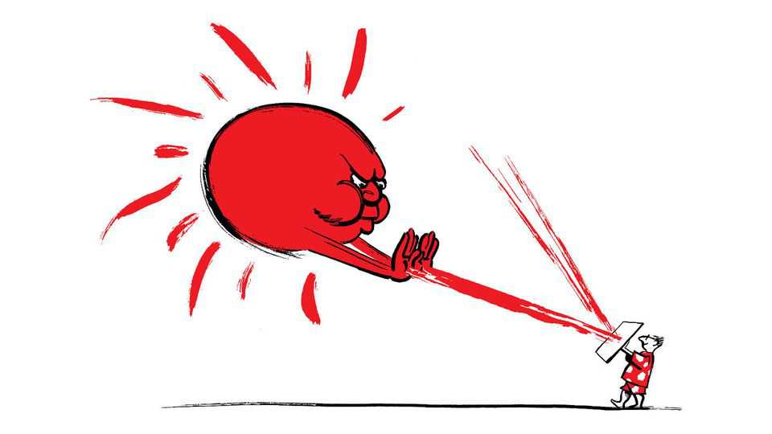

Does air-conditioning contribute to urban heat?
Also this week hospital malpractice, red-light therapy, the night-time economy, Andy Burnham’s taste in music, burgers

Aug 13th 2026
Letters are welcome via email to letters@economist.comFind out more about how we process your letter
People pushing for more air-conditioning in places like Europe do not recognise that it is a big contributor to urban heat (“The geopolitics of air-conditioning”, July 25th). Research has shown that operating AC during a heatwave in Paris, where most residents still don’t have AC, increased ambient city temperature by 20C (3.60F). Adopting AC as the dominant cooling strategy in cities will condemn them to more miserable summers, hurting outdoor workers, athletes, tourists and anyone not inside air-conditioned space.
A smarter alternative that is being adopted across a dozen American cities, including Atlanta, Boston and Dallas, is to change surfaces to enable an element of cooling. City roofs and roads absorb more than 80% of incoming sunlight, contributing three times more to city heat than does global warming. The solution is to treat all city surfaces as a single integrated solution to heat. With our help, last year Atlanta adopted a bill requiring new and retrofitted roofs to be much more reflective. This one measure, one of several the city is embracing, will triple the reflectivity of commercial roofs, cool the city by 1.30C (with up to 3.50C cooling in hot, lower-income neighbourhoods) and cut the electricity bill by $310m. Putting these mandates in place costs a city nothing, and because reflective roofs cost about the same as dark roofs, businesses and consumers also reap benefits.
Greg KatsChief executiveSmart Surfaces CoalitionWashington, DC
The American Sunbelt would not be thriving without the introduction of air-conditioning. Growing up in Mississippi in the 1950s, our summers were unbearably hot and humid. With no AC cities like Atlanta, Charlotte, Houston and Phoenix would not be thriving. The migration from the northern blue states to the southern red states would not be happening without AC.
James HortonCharlotte, North Carolina
Your article on the deaths and cover-ups in Britain’s maternity hospitals identified a crucial paradox but stopped short of its lesson (“The lying doctors”, July 4th). You noted that reports by staff of moderate-harm incidents in Nottingham fell after the “duty of candour” was introduced in 2014. So consequently, a rule that was intended to elicit honesty produced dishonesty instead.
This is not an anomaly. It is a predictable factor in complex systems. Behaviour changes when disclosure is mandated. When staff fear blame, litigation and sanction, it is the categorisation of harm that changes rather than practice. Safety depends on learning, and learning depends on honest accounts of fallibility. People give such accounts only when it cannot be turned against them. That is why investigations by the Health Services Safety Investigations Body carry a statutory “safe space”, as do equivalent regimes in aviation.
You concluded that truth cannot be legislated and that rotten leaders must go. Accountability to the harmed families is indeed non-negotiable. But every inquiry you list, from Morecambe Bay onwards, removed leaders; none changed the conditions under which truth is told. Until learning is formally separated from enforcement, each new leadership will inherit the same incentives, and further reports into patient-safety failures will follow.
Ted BakerChairHealth Services Safety Investigations BodyLondon
Your article on photobiomodulation (PBM), therapies that use red and infrared light as the agent, made a distinction between promising clinical evidence and more speculative wellness claims (”The surprising benefits of red light”, July 25th). Clinical adoption has already outpaced the public conversation.
In the United States, PBM-related procedures are now performed at more than 2,300 sites of care. Among the highest-volume facilities, the number of procedures have risen by roughly a third, with recent quarters exceeding 1,000 procedures at a single site. The clinicians involved span orthopedic surgery, neurology, physical therapy, chiropractic services and rehabilitation.
That sharpens your conclusion. The unresolved questions that Professor Glen Jeffery raises—wavelength, dosage, distance and duration—are no longer purely academic. They are being confronted in thousands of clinics every week. If PBM is to fulfil its potential in areas such as diabetic glucose regulation, retinal aging and traumatic brain injury, the development of standardised treatment protocols will need to keep pace with its growing clinical adoption.
Aalap PatelVice-president, go-to-marketAcuityMDPrinceton, New Jersey
If cities want to boost their night-time economies they would be best to avoid “making it easier to party” by providing more alcohol licences (“The night shift”, July 18th). The higher margins and tax revenues from alcohol are tempting, but as a former police officer, I know that easier access to drink comes at a heavy price: domestic violence, drunk driving, addiction and soaring health-care costs. Anyway, evidence suggests that young people are souring on traditional drinking culture.
What cities truly lack are places for proper late-night conversation and relaxation, such as cafés, extended-hour libraries and museums and game lounges. People want a place where they can connect with others without the pressure to drink. Vibrant alternatives already flourish in Middle Eastern café culture and East Asian night markets. Paris hosts bakery raves and Berlin has “Sober Sensations” events.
People still want a night out. They just don’t want to stumble home at 4am covered in sick.
Charles HoltsclawHouston
There is one city in America that takes up your prescription of letting people have fun: New Orleans. As Bob Dylan once said: “Everything in New Orleans is a good idea.”
Morris ZwickGermantown, Maryland
Andy Burnham’s view of British music is oblivious both to the breadth of music being produced in Britain today and to the country’s musical history beyond the familiar canon of 1980s indie bands (Bagehot, August 1st). He overlooks Manchester’s, and Britain’s, rich, black musical heritage. Rather than repeating the same established names like The Smiths and Oasis, he might acknowledge figures such as DJ Paulette, Hewan Clarke and A Guy Called Gerald, who helped shape Manchester’s dance and electronic-music culture, as well as the broader, now-mythologised and often whitewashed story of the Hacienda, a music venue.
Overall, the prime minister could learn from contemporary groups such as London’s Ezra Collective, whose work champions inclusion and hope, rather than celebrating worn-out indie anthems. We need less “Wonderwall” and more “Where I’m Meant to Be”.
Tim PunterLondon
The Big Mac index does indeed naturally invite a lot of puns (“40 years of burgernomics”, August 1st). Although some people may have a beef with such punnery, for me they are the special sauce of the index. Lettuce not dwell on how cheesy they can be; trying to remove them would leave the Big Mac index in a real pickle. Indeed, not allowing journalists to leave onion-like layers of puns throughout their articles would be a real pain in the bun.
Paul ShrinerAnkeny, Iowa